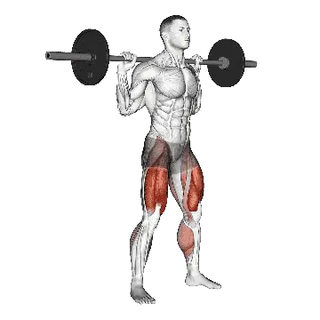

Squat
Squat mostra carga média e padrões de força como referência para pernas. Músculos principais: Quadríceps, Glúteo máximo, Posteriores de coxa.

Carga média: Intermediário
Referência para uma pessoa de nível intermediário.
Homens
287 lb
Mulheres
161 lb
Carga média de Squat [1RM]
| Nível | ||
|---|---|---|
| Iniciante | 141 lb | 65 lb |
| Novato | 206 lb | 107 lb |
| Intermediário | 287 lb | 161 lb |
| Avançado | 381 lb | 227 lb |
| Elite | 483 lb | 300 lb |
Nota: estes padrões são estimativas de 1RM baseadas em atletas médios. Peso corporal, idade e outros fatores pessoais podem afetar os valores. Veja as tabelas detalhadas abaixo.
Padrões de força de Squat (lb)
Homens por peso corporal (lb) [1RM]
| Peso corporal | Iniciante | Novato | Intermediário | Avançado | Elite |
|---|---|---|---|---|---|
| 110 | 74 | 114 | 167 | 229 | 298 |
| 120 | 87 | 131 | 187 | 252 | 324 |
| 130 | 100 | 147 | 206 | 274 | 349 |
| 140 | 113 | 162 | 224 | 295 | 373 |
| 150 | 125 | 177 | 242 | 316 | 396 |
| 160 | 138 | 192 | 259 | 336 | 418 |
| 170 | 150 | 207 | 276 | 355 | 439 |
| 180 | 162 | 221 | 292 | 373 | 460 |
| 190 | 174 | 235 | 308 | 391 | 479 |
| 200 | 186 | 248 | 323 | 408 | 499 |
| 210 | 197 | 261 | 338 | 425 | 517 |
| 220 | 209 | 274 | 353 | 442 | 535 |
| 230 | 220 | 287 | 367 | 457 | 553 |
| 240 | 230 | 299 | 381 | 473 | 570 |
| 250 | 241 | 311 | 395 | 488 | 586 |
| 260 | 251 | 323 | 408 | 503 | 603 |
| 270 | 262 | 335 | 421 | 517 | 618 |
| 280 | 272 | 346 | 434 | 531 | 634 |
| 290 | 282 | 357 | 446 | 545 | 649 |
| 300 | 291 | 368 | 459 | 559 | 664 |
| 310 | 301 | 379 | 470 | 572 | 678 |
Homens por idade [1RM]
| Idade | Iniciante | Novato | Intermediário | Avançado | Elite |
|---|---|---|---|---|---|
| 15 | 120 | 175 | 244 | 324 | 411 |
| 20 | 138 | 201 | 279 | 371 | 471 |
| 25 | 141 | 206 | 287 | 381 | 483 |
| 30 | 141 | 206 | 287 | 381 | 483 |
| 35 | 141 | 206 | 287 | 381 | 483 |
| 40 | 141 | 206 | 287 | 381 | 483 |
| 45 | 134 | 195 | 272 | 361 | 458 |
| 50 | 126 | 183 | 255 | 339 | 430 |
| 55 | 116 | 170 | 236 | 314 | 398 |
| 60 | 106 | 155 | 216 | 286 | 363 |
| 65 | 96 | 140 | 195 | 259 | 328 |
| 70 | 86 | 126 | 175 | 232 | 294 |
| 75 | 77 | 112 | 156 | 208 | 263 |
| 80 | 69 | 100 | 140 | 186 | 235 |
| 85 | 62 | 90 | 125 | 166 | 211 |
| 90 | 56 | 81 | 113 | 150 | 190 |
Mulheres por peso corporal (lb) [1RM]
| Peso corporal | Iniciante | Novato | Intermediário | Avançado | Elite |
|---|---|---|---|---|---|
| 90 | 39 | 71 | 114 | 167 | 226 |
| 100 | 46 | 79 | 124 | 179 | 241 |
| 110 | 51 | 87 | 134 | 191 | 254 |
| 120 | 57 | 94 | 143 | 201 | 267 |
| 130 | 63 | 101 | 152 | 212 | 279 |
| 140 | 68 | 108 | 160 | 222 | 290 |
| 150 | 73 | 115 | 168 | 231 | 301 |
| 160 | 78 | 121 | 175 | 240 | 311 |
| 170 | 83 | 127 | 183 | 248 | 320 |
| 180 | 88 | 133 | 190 | 256 | 329 |
| 190 | 93 | 138 | 196 | 264 | 338 |
| 200 | 97 | 144 | 203 | 272 | 347 |
| 210 | 101 | 149 | 209 | 279 | 355 |
| 220 | 106 | 154 | 215 | 286 | 363 |
| 230 | 110 | 159 | 221 | 293 | 371 |
| 240 | 114 | 164 | 227 | 299 | 378 |
| 250 | 118 | 169 | 232 | 306 | 385 |
| 260 | 122 | 173 | 238 | 312 | 392 |
Mulheres por idade [1RM]
| Idade | Iniciante | Novato | Intermediário | Avançado | Elite |
|---|---|---|---|---|---|
| 15 | 55 | 91 | 137 | 193 | 255 |
| 20 | 63 | 104 | 157 | 221 | 292 |
| 25 | 65 | 107 | 161 | 227 | 300 |
| 30 | 65 | 107 | 161 | 227 | 300 |
| 35 | 65 | 107 | 161 | 227 | 300 |
| 40 | 65 | 107 | 161 | 227 | 300 |
| 45 | 62 | 101 | 153 | 215 | 284 |
| 50 | 58 | 95 | 143 | 202 | 267 |
| 55 | 54 | 88 | 133 | 187 | 247 |
| 60 | 49 | 80 | 121 | 170 | 225 |
| 65 | 44 | 72 | 109 | 154 | 203 |
| 70 | 40 | 65 | 98 | 138 | 183 |
| 75 | 35 | 58 | 88 | 123 | 163 |
| 80 | 32 | 52 | 78 | 110 | 146 |
| 85 | 28 | 47 | 70 | 99 | 131 |
| 90 | 26 | 42 | 63 | 89 | 118 |
Nota: uma barra padrão de academia geralmente pesa 44 lb.
Registre e analise no app Shiba
Revise carga, repetições e progresso em um só lugar.
Recordes mundiais
Atualizado: July 2, 2026
OpenPowerlifting all-time competition records and Guinness World Records endurance titles. Raw and equipped records use separate rulesets.
Como ler a tabela
| Nível | Descrição | Distribuição |
|---|---|---|
| Iniciante | Aprendeu a forma correta e treinou consistentemente por pelo menos 1 mês. | Base 5% |
| Novato | Treinou consistentemente por pelo menos 6 meses. | Top 80% |
| Intermediário | Treinou consistentemente por pelo menos 2 anos. | Top 50% |
| Avançado | Treinou consistentemente por mais de 5 anos. | Top 20% |
| Elite | Treinou especificamente este exercício por mais de 5 anos. | Top 5% |
Outros exercícios
Pernas
Sled Leg Press
Pernas
Front Squat
Pernas
Hip Thrust
Pernas
Leg Extension
Pernas
Horizontal Leg Press
Pernas
Hack Squat
Pernas
Seated Leg Curl
Pernas
Dumbbell Bulgarian Split Squat
Pernas / Halteres
Goblet Squat
Pernas
Lying Leg Curl
Pernas
Machine Calf Raise
Pernas / Máquina
Dumbbell Lunge
Pernas / Halteres